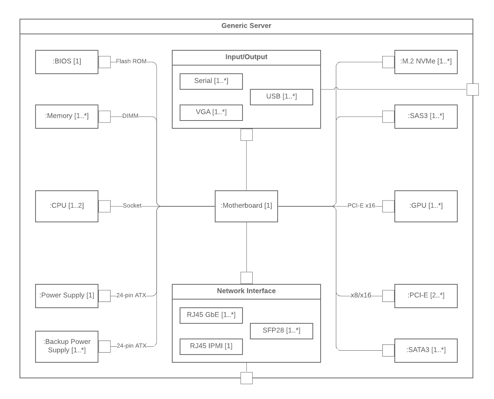

What are the types of UML diagrams
UML standards identify 13 types of diagrams that are divided in to two catergories.Structural UML diagrams
It shows how the system is structured, including the classes, objects, packages,componenets, etc. in the system and relationship between those elements.
Class Diagram
Class diagrams show the static structure of the system, including classes, their attribute and behaviors, and relationships between each class.
A class is represented by a rectangle that contains three compartment contains the class's name is mandatory, but the bottom two compartments give details about the class attributes and class operations and behaviors.
Component Diagram
A Component diagram is essentially is a more specialized version of the class diagram - The same notation rules apply for both.
A component diagram breaks a complext software system down into smaller componenets and visualize the relationship between those components.

Deployment Diagrams
Deployment Diagrams show how software is deployed on hardware componenets in a system.
These diagrams are most useful for system engineers, and they usually show performance, scalability, and maintainability.
When hardware compoinenets are displyed in relation to each other, it's easier to keep track of your entire hardware mesh and make sure that all the elemenets are accounted for in a deployment.
Composit Structure diagram
These types of diagrams are essentially the blueprints for the internal structure of a classifier. They can also be used to show the behavour of a collaboration or classifier interactions with their environment through ports. They can easily depict internal componenet of any hardware to more thoroughly understand the inner workings.
Object Diagram
Object diagram show examples of data structures at a specific time.
You could use a class diagram to show a structure and use object diagrams to test cases to verify the completeness of your class diagrams.
Or you could create an object diagram to discover information about model elemenets and thier links.

Package Diagram
Package diagram are used to show dependencies between different packages in the system.
A Package, depecited as a file folder, orgaizes model elements, such as use cases or classes into groups.
Behavioral UML Diagarams
These UML diagrams visualize how the system behaves and interacts with itself and with users, other systems, and other entities.Timing Diagram
Often described as an inverted sequence diagram, a timing diagram shows how object interact with each other in a given timeframe.
Use these diagrams to see how long each step of a process takes and find areas for improvement.
Interaction overview diagram
This diagram overviews the flow of control between interacting nodes.
They inlucde initial nodes, flow final nodes, activity final nodes, decision nodes, merge nodes, fork nodes, and join nodes.
Communication diagram
Communication diagarams, which used to be called collaboration diagrams, show how objects relate to each other.
They model the way objects associated and connect through messages within an architectural design of a system.
They can also show alternative scenarios within usecases or operations that require the collaboration of different objects and interactions.
State diagram
State diagrams, simply put, depict state and transitions. A state refers to different combinations of information that an object can hold, and this UML diagram can visualize all possible states and the way the object transitions from one state to the next.
Use case diagram
Use case diagrams model how users/actors interact with system. This type of UML diagram should be a high-level overview of the relationship between actors and systems, so it can be a great tool for explaining your system to non-techincal audience.

Sequence diagram
A Sequence diagram, sometimes referred to as an event diagram or an event scenario, shows the order in which objects interact. This way, you can visually represent simple runtime scenarios.
Activity diagram
Activity diagrams visualize the steps performed in a use case - the activites can be sequencial, branched or concurrent.
This type of UML diagram is used to show dynamic behavior of system, but it can also be useful in business process modelling.